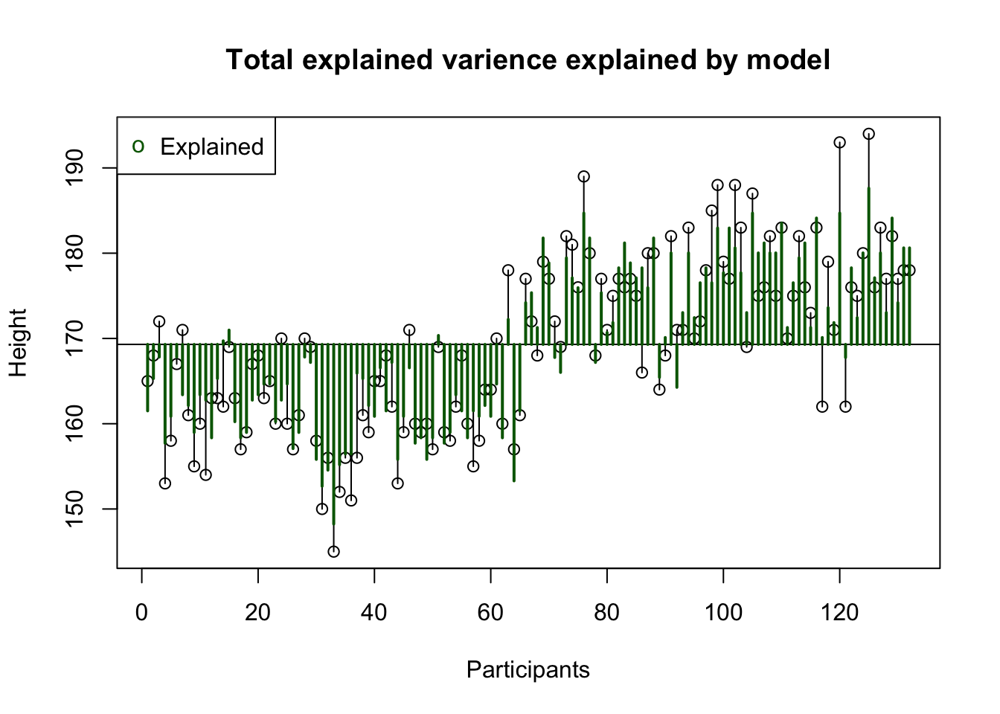
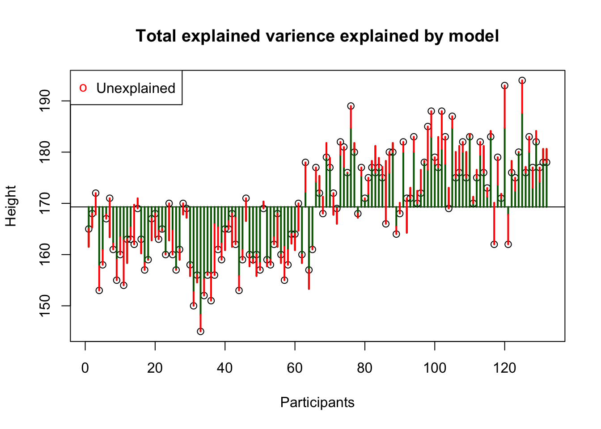
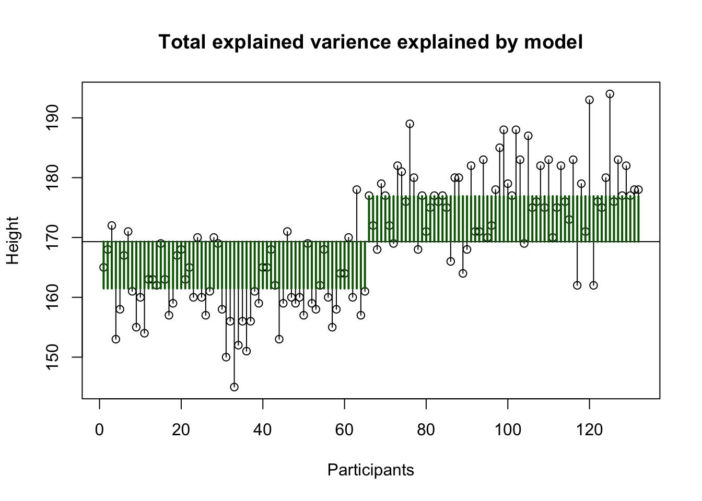
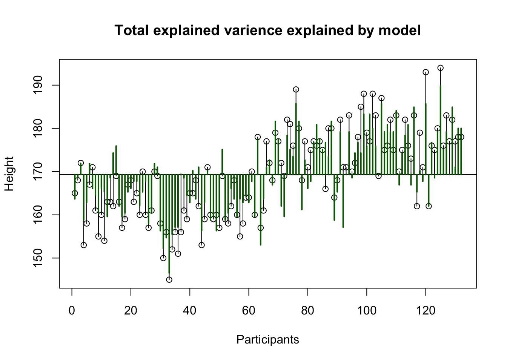

Moderation
Interaction
In statistics and regression analysis, moderation occurs when the relationship between two variables depends on a third variable. The third variable is referred to as the moderator variable or simply the moderator. The effect of a moderating variable is characterized statistically as an interaction.
Categorical and continuous predictor
Another good predictor for height is the mid-parental height. That is, the biological sex adjusted average height of both parents.
Interaction
Formal model
\[ \begin{align} \widehat{outcome}_i &= b_0 + b_1 \times \text{dummy}_i + b_2 \times {MPH}_i + b_3 \times \text{dummy}_i \times {MPH}_i\\ \widehat{height}_i &= b_0 + b_1 \times \text{male}_i + b_2 \times {MPH}_i + b_3 \times \text{male}_i \times {MPH}_i\\ \end{align} \]
Regression model
\[ \begin{align} \widehat{height}_i &= b_0 + b_1 \times \text{male}_i + b_2 \times {MPH}_i + b_3 \times \text{male}_i \times {MPH}_i\\ \end{align} \]
| height | |||
| Predictors | Estimates | CI | p |
| (Intercept) | 54.78 | 32.17 – 77.39 | <0.001 |
| sex [male] | 15.51 | -14.55 – 45.56 | 0.309 |
| MPH | 0.63 | 0.50 – 0.77 | <0.001 |
| sex [male] × MPH | -0.05 | -0.22 – 0.12 | 0.584 |
| Observations | 132 | ||
| R2 / R2 adjusted | 0.842 / 0.839 | ||
ANOVA
anova(fit2)Analysis of Variance Table
Response: height
Df Sum Sq Mean Sq F value Pr(>F)
sex 1 7843.4 7843.4 482.7429 <2e-16 ***
MPH 1 3263.9 3263.9 200.8852 <2e-16 ***
sex:MPH 1 4.9 4.9 0.3017 0.5838
Residuals 128 2079.7 16.2
---
Signif. codes: 0 '***' 0.001 '**' 0.01 '*' 0.05 '.' 0.1 ' ' 1Total explained variance

Total unexplained variance

Explained variance sex

Explained variance MPH

Interaction SS AB Alcohol x Speed
| Variance | Sum of squares | df | Mean squares | F-ratio |
|---|---|---|---|---|
| \(\hspace{2ex}AB\) | \(\text{SS}_{A \times B} = \text{SS}_{\text{model}} - \text{SS}_{\text{A}} - \text{SS}_{\text{B}}\) | \(df_A \times df_B\) | \(\frac{\text{SS}_{\text{AB}}}{\text{df}_{\text{AB}}}\) | \(\frac{\text{MS}_{\text{AB}}}{\text{MS}_{\text{error}}}\) |
\[ \begin{align} {SS}_{{sex} \times {MPH}} &= {SS}_{model} - {SS}_{sex} - {SS}_{MPH} \\ {SS}_{{sex} \times {MPH}} &= 11112.2 - 7843.4 - 3263.9 = 4.9 \end{align} \]